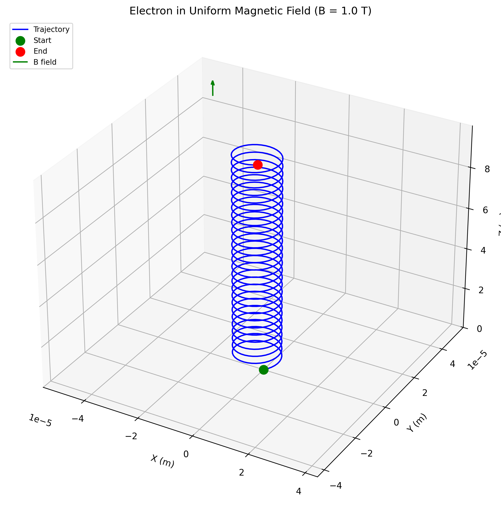
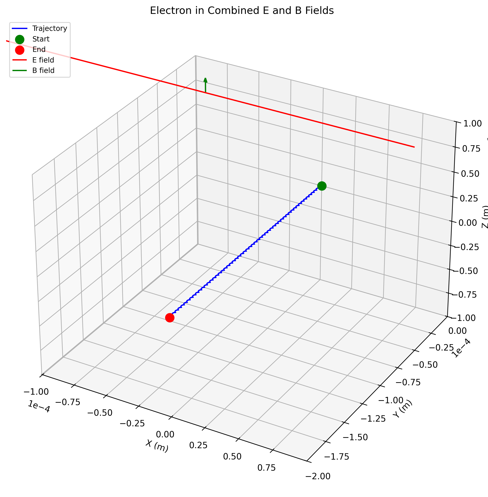
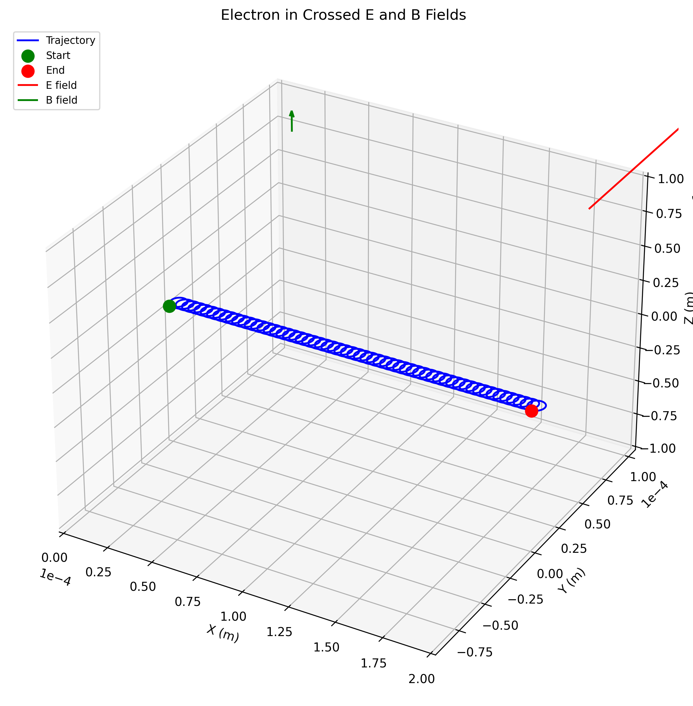
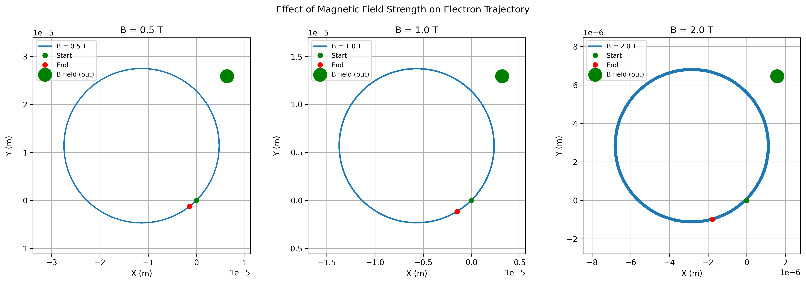
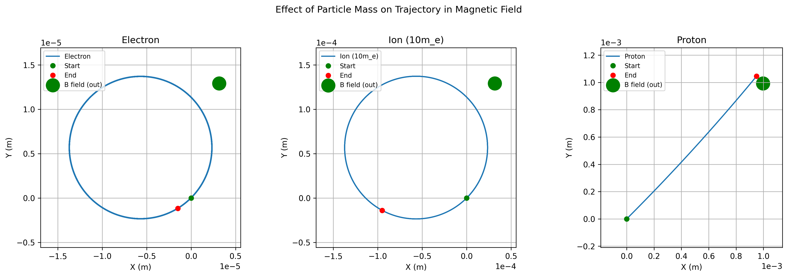

Simulating the Effects of the Lorentz Force
Motivation:
The Lorentz force, expressed as \(\mathbf{F} = q\mathbf{E} + q\mathbf{v} \times \mathbf{B}\), governs the motion of charged particles in electric and magnetic fields. It is foundational in fields like plasma physics, particle accelerators, and astrophysics. By focusing on simulations, we can explore the practical applications and visualize the complex trajectories that arise due to this force.
Implementation
Click to show/hide implementation code
import numpy as np
import matplotlib.pyplot as plt
from mpl_toolkits.mplot3d import Axes3D
from matplotlib.animation import FuncAnimation
import os
# Create directory for images if it doesn't exist
image_dir = os.path.join('docs', '1 Physics', '4 Electromagnetism', 'images')
os.makedirs(image_dir, exist_ok=True)
def lorentz_force(q, E, v, B):
"""
Calculate the Lorentz force on a charged particle.
Args:
q (float): Charge of the particle in Coulombs
E (numpy.ndarray): Electric field vector in N/C
v (numpy.ndarray): Velocity vector of the particle in m/s
B (numpy.ndarray): Magnetic field vector in Tesla
Returns:
numpy.ndarray: Force vector in Newtons
"""
return q * (E + np.cross(v, B))
def acceleration(q, m, E, v, B):
"""
Calculate the acceleration of a charged particle due to the Lorentz force.
Args:
q (float): Charge of the particle in Coulombs
m (float): Mass of the particle in kg
E (numpy.ndarray): Electric field vector in N/C
v (numpy.ndarray): Velocity vector of the particle in m/s
B (numpy.ndarray): Magnetic field vector in Tesla
Returns:
numpy.ndarray: Acceleration vector in m/s²
"""
F = lorentz_force(q, E, v, B)
return F / m
def runge_kutta_step(q, m, E, v, r, B, dt):
"""
Perform a single step of the 4th-order Runge-Kutta method to update position and velocity.
Args:
q (float): Charge of the particle in Coulombs
m (float): Mass of the particle in kg
E (numpy.ndarray): Electric field vector in N/C
v (numpy.ndarray): Current velocity vector in m/s
r (numpy.ndarray): Current position vector in m
B (numpy.ndarray): Magnetic field vector in Tesla
dt (float): Time step in seconds
Returns:
tuple: Updated position and velocity vectors
"""
# Calculate k1
a1 = acceleration(q, m, E, v, B)
k1_v = a1 * dt
k1_r = v * dt
# Calculate k2
a2 = acceleration(q, m, E, v + 0.5 * k1_v, B)
k2_v = a2 * dt
k2_r = (v + 0.5 * k1_v) * dt
# Calculate k3
a3 = acceleration(q, m, E, v + 0.5 * k2_v, B)
k3_v = a3 * dt
k3_r = (v + 0.5 * k2_v) * dt
# Calculate k4
a4 = acceleration(q, m, E, v + k3_v, B)
k4_v = a4 * dt
k4_r = (v + k3_v) * dt
# Update velocity and position
v_new = v + (k1_v + 2*k2_v + 2*k3_v + k4_v) / 6
r_new = r + (k1_r + 2*k2_r + 2*k3_r + k4_r) / 6
return r_new, v_new
def simulate_particle_motion(q, m, E, B, v0, r0, dt, steps):
"""
Simulate the motion of a charged particle in electric and magnetic fields.
Args:
q (float): Charge of the particle in Coulombs
m (float): Mass of the particle in kg
E (numpy.ndarray): Electric field vector in N/C
B (numpy.ndarray): Magnetic field vector in Tesla
v0 (numpy.ndarray): Initial velocity vector in m/s
r0 (numpy.ndarray): Initial position vector in m
dt (float): Time step in seconds
steps (int): Number of simulation steps
Returns:
tuple: Arrays of positions and velocities over time
"""
# Initialize arrays to store positions and velocities
positions = np.zeros((steps, 3))
velocities = np.zeros((steps, 3))
# Set initial conditions
positions[0] = r0
velocities[0] = v0
# Perform simulation using Runge-Kutta method
for i in range(1, steps):
positions[i], velocities[i] = runge_kutta_step(
q, m, E, velocities[i-1], positions[i-1], B, dt
)
return positions, velocities
def calculate_larmor_radius(q, m, v_perp, B_mag):
"""
Calculate the Larmor radius (gyroradius) of a charged particle in a magnetic field.
Args:
q (float): Charge of the particle in Coulombs
m (float): Mass of the particle in kg
v_perp (float): Velocity component perpendicular to the magnetic field in m/s
B_mag (float): Magnitude of the magnetic field in Tesla
Returns:
float: Larmor radius in meters
"""
return m * v_perp / (abs(q) * B_mag)
def calculate_cyclotron_frequency(q, m, B_mag):
"""
Calculate the cyclotron frequency of a charged particle in a magnetic field.
Args:
q (float): Charge of the particle in Coulombs
m (float): Mass of the particle in kg
B_mag (float): Magnitude of the magnetic field in Tesla
Returns:
float: Cyclotron frequency in radians per second
"""
return abs(q) * B_mag / m
def calculate_drift_velocity(q, E, B):
"""
Calculate the E×B drift velocity of a charged particle.
Args:
q (float): Charge of the particle in Coulombs (not used in calculation but included for completeness)
E (numpy.ndarray): Electric field vector in N/C
B (numpy.ndarray): Magnetic field vector in Tesla
Returns:
numpy.ndarray: Drift velocity vector in m/s
"""
B_squared = np.sum(B**2)
return np.cross(E, B) / B_squared
def plot_trajectory_2d(positions, title, save_path=None):
"""
Plot the 2D projection of a particle's trajectory.
Args:
positions (numpy.ndarray): Array of particle positions
title (str): Plot title
save_path (str, optional): Path to save the plot image
"""
plt.figure(figsize=(10, 8))
plt.plot(positions[:, 0], positions[:, 1], 'b-', label='Trajectory')
plt.plot(positions[0, 0], positions[0, 1], 'go', label='Start')
plt.plot(positions[-1, 0], positions[-1, 1], 'ro', label='End')
plt.title(title)
plt.xlabel('X (m)')
plt.ylabel('Y (m)')
plt.grid(True)
plt.legend()
plt.axis('equal')
if save_path:
plt.savefig(save_path, dpi=300, bbox_inches='tight')
print(f"Saved 2D plot to {save_path}")
plt.show()
def plot_trajectory_3d(positions, title, save_path=None):
"""
Plot the 3D trajectory of a particle.
Args:
positions (numpy.ndarray): Array of particle positions
title (str): Plot title
save_path (str, optional): Path to save the plot image
"""
fig = plt.figure(figsize=(12, 10))
ax = fig.add_subplot(111, projection='3d')
ax.plot(positions[:, 0], positions[:, 1], positions[:, 2], 'b-', label='Trajectory')
ax.scatter(positions[0, 0], positions[0, 1], positions[0, 2], color='g', s=100, label='Start')
ax.scatter(positions[-1, 0], positions[-1, 1], positions[-1, 2], color='r', s=100, label='End')
ax.set_title(title)
ax.set_xlabel('X (m)')
ax.set_ylabel('Y (m)')
ax.set_zlabel('Z (m)')
ax.legend()
# Set equal aspect ratio
max_range = np.array([positions[:, 0].max() - positions[:, 0].min(),
positions[:, 1].max() - positions[:, 1].min(),
positions[:, 2].max() - positions[:, 2].min()]).max() / 2.0
mid_x = (positions[:, 0].max() + positions[:, 0].min()) * 0.5
mid_y = (positions[:, 1].max() + positions[:, 1].min()) * 0.5
mid_z = (positions[:, 2].max() + positions[:, 2].min()) * 0.5
ax.set_xlim(mid_x - max_range, mid_x + max_range)
ax.set_ylim(mid_y - max_range, mid_y + max_range)
ax.set_zlim(mid_z - max_range, mid_z + max_range)
if save_path:
plt.savefig(save_path, dpi=300, bbox_inches='tight')
print(f"Saved 3D plot to {save_path}")
plt.show()
def create_animation(positions, title, save_path=None):
"""
Create an animation of the particle's trajectory.
Args:
positions (numpy.ndarray): Array of particle positions
title (str): Animation title
save_path (str, optional): Path to save the animation
"""
fig = plt.figure(figsize=(10, 8))
ax = fig.add_subplot(111, projection='3d')
# Set up the initial plot
line, = ax.plot([], [], [], 'b-', label='Trajectory')
point, = ax.plot([], [], [], 'ro', markersize=8)
# Set labels and title
ax.set_xlabel('X (m)')
ax.set_ylabel('Y (m)')
ax.set_zlabel('Z (m)')
ax.set_title(title)
# Set axis limits
max_range = np.array([positions[:, 0].max() - positions[:, 0].min(),
positions[:, 1].max() - positions[:, 1].min(),
positions[:, 2].max() - positions[:, 2].min()]).max() / 2.0
mid_x = (positions[:, 0].max() + positions[:, 0].min()) * 0.5
mid_y = (positions[:, 1].max() + positions[:, 1].min()) * 0.5
mid_z = (positions[:, 2].max() + positions[:, 2].min()) * 0.5
ax.set_xlim(mid_x - max_range, mid_x + max_range)
ax.set_ylim(mid_y - max_range, mid_y + max_range)
ax.set_zlim(mid_z - max_range, mid_z + max_range)
def init():
line.set_data([], [])
line.set_3d_properties([])
point.set_data([], [])
point.set_3d_properties([])
return line, point
def animate(i):
# Use a window of points to show the trajectory
window_size = 50
start_idx = max(0, i - window_size)
x = positions[start_idx:i+1, 0]
y = positions[start_idx:i+1, 1]
z = positions[start_idx:i+1, 2]
line.set_data(x, y)
line.set_3d_properties(z)
point.set_data([positions[i, 0]], [positions[i, 1]])
point.set_3d_properties([positions[i, 2]])
return line, point
# Create animation
frames = min(len(positions), 200) # Limit frames for performance
step = len(positions) // frames if len(positions) > frames else 1
ani = FuncAnimation(fig, animate, frames=range(0, len(positions), step),
init_func=init, blit=True, interval=50)
if save_path:
ani.save(save_path, writer='pillow', fps=20)
print(f"Saved animation to {save_path}")
plt.show()
Click to show/hide example scenarios code
# Scenario 1: Uniform Magnetic Field
# Electron properties
q_electron = -1.602e-19 # Charge in Coulombs
m_electron = 9.109e-31 # Mass in kg
# Field configuration
B = np.array([0, 0, 1.0]) # Magnetic field in Tesla (z-direction)
E = np.array([0, 0, 0]) # No electric field
# Initial conditions
v0 = np.array([1e6, 1e6, 1e5]) # Initial velocity in m/s
r0 = np.array([0, 0, 0]) # Initial position at origin
# Simulation parameters
dt = 1e-12 # Time step in seconds
steps = 1000 # Number of steps
# Run simulation
positions, velocities = simulate_particle_motion(
q_electron, m_electron, E, B, v0, r0, dt, steps
)
# Calculate theoretical values
v_perp = np.sqrt(v0[0]**2 + v0[1]**2) # Perpendicular velocity component
B_mag = np.linalg.norm(B) # Magnitude of magnetic field
larmor_radius = calculate_larmor_radius(q_electron, m_electron, v_perp, B_mag)
cyclotron_freq = calculate_cyclotron_frequency(q_electron, m_electron, B_mag)
print(f"Theoretical Larmor radius: {larmor_radius:.6e} m")
print(f"Theoretical cyclotron frequency: {cyclotron_freq:.6e} rad/s")
# Plot trajectories
plot_trajectory_2d(
positions,
f"Electron in Uniform Magnetic Field (B = {B_mag} T)",
os.path.join(image_dir, 'uniform_magnetic_field_2d.png')
)
plot_trajectory_3d(
positions,
f"Electron in Uniform Magnetic Field (B = {B_mag} T)",
os.path.join(image_dir, 'uniform_magnetic_field_3d.png')
)
# Create animation
create_animation(
positions,
f"Electron in Uniform Magnetic Field (B = {B_mag} T)",
os.path.join(image_dir, 'uniform_magnetic_field_animation.gif')
)
# Scenario 2: Combined Electric and Magnetic Fields
# Field configuration
B = np.array([0, 0, 1.0]) # Magnetic field in Tesla (z-direction)
E = np.array([1e5, 0, 0]) # Electric field in N/C (x-direction)
# Initial conditions
v0 = np.array([0, 0, 0]) # Starting from rest
r0 = np.array([0, 0, 0]) # Initial position at origin
# Simulation parameters
dt = 1e-12 # Time step in seconds
steps = 2000 # Number of steps
# Run simulation
positions, velocities = simulate_particle_motion(
q_electron, m_electron, E, B, v0, r0, dt, steps
)
# Calculate theoretical drift velocity
drift_v = calculate_drift_velocity(q_electron, E, B)
print(f"Theoretical E×B drift velocity: {drift_v} m/s")
# Plot trajectories
plot_trajectory_2d(
positions,
f"Electron in Combined E and B Fields",
os.path.join(image_dir, 'combined_fields_2d.png')
)
plot_trajectory_3d(
positions,
f"Electron in Combined E and B Fields",
os.path.join(image_dir, 'combined_fields_3d.png')
)
# Create animation for combined fields
create_animation(
positions,
f"Electron in Combined E and B Fields",
os.path.join(image_dir, 'combined_fields_animation.gif')
)
# Scenario 3: Crossed Electric and Magnetic Fields
# Field configuration
B = np.array([0, 0, 1.0]) # Magnetic field in Tesla (z-direction)
E = np.array([0, 1e5, 0]) # Electric field in N/C (y-direction)
# Initial conditions
v0 = np.array([1e6, 0, 0]) # Initial velocity in x-direction
r0 = np.array([0, 0, 0]) # Initial position at origin
# Simulation parameters
dt = 1e-12 # Time step in seconds
steps = 2000 # Number of steps
# Run simulation
positions, velocities = simulate_particle_motion(
q_electron, m_electron, E, B, v0, r0, dt, steps
)
# Plot trajectories
plot_trajectory_2d(
positions,
f"Electron in Crossed E and B Fields",
os.path.join(image_dir, 'crossed_fields_2d.png')
)
plot_trajectory_3d(
positions,
f"Electron in Crossed E and B Fields",
os.path.join(image_dir, 'crossed_fields_3d.png')
)
# Create animation for crossed fields
create_animation(
positions,
f"Electron in Crossed E and B Fields",
os.path.join(image_dir, 'crossed_fields_animation.gif')
)
# Parameter Exploration
# Function to explore different magnetic field strengths
def explore_magnetic_field_strength():
# Electron properties
q_electron = -1.602e-19 # Charge in Coulombs
m_electron = 9.109e-31 # Mass in kg
# Initial conditions
v0 = np.array([1e6, 1e6, 0]) # Initial velocity in m/s
r0 = np.array([0, 0, 0]) # Initial position at origin
# No electric field
E = np.array([0, 0, 0])
# Simulation parameters
dt = 1e-12 # Time step in seconds
steps = 1000 # Number of steps
# Different magnetic field strengths
B_strengths = [0.1, 0.5, 1.0, 2.0]
plt.figure(figsize=(12, 10))
for B_strength in B_strengths:
B = np.array([0, 0, B_strength])
positions, _ = simulate_particle_motion(
q_electron, m_electron, E, B, v0, r0, dt, steps
)
plt.plot(positions[:, 0], positions[:, 1],
label=f'B = {B_strength} T')
plt.title('Effect of Magnetic Field Strength on Electron Trajectory')
plt.xlabel('X (m)')
plt.ylabel('Y (m)')
plt.grid(True)
plt.legend()
plt.axis('equal')
save_path = os.path.join(image_dir, 'magnetic_field_strength_comparison.png')
plt.savefig(save_path, dpi=300, bbox_inches='tight')
plt.show()
# Function to explore different particle masses
def explore_particle_mass():
# Charge (same for all particles)
q = -1.602e-19 # Charge in Coulombs
# Different particle masses
masses = {
'Electron': 9.109e-31,
'Muon': 1.883e-28,
'Proton': 1.673e-27
}
# Field configuration
B = np.array([0, 0, 1.0]) # Magnetic field in Tesla (z-direction)
E = np.array([0, 0, 0]) # No electric field
# Initial conditions
v0 = np.array([1e6, 0, 0]) # Initial velocity in m/s
r0 = np.array([0, 0, 0]) # Initial position at origin
# Simulation parameters
dt = 1e-12 # Time step in seconds
steps = 1000 # Number of steps
plt.figure(figsize=(12, 10))
for particle, mass in masses.items():
positions, _ = simulate_particle_motion(
q, mass, E, B, v0, r0, dt, steps
)
plt.plot(positions[:, 0], positions[:, 1],
label=f'{particle} (m = {mass:.3e} kg)')
plt.title('Effect of Particle Mass on Trajectory in Magnetic Field')
plt.xlabel('X (m)')
plt.ylabel('Y (m)')
plt.grid(True)
plt.legend()
plt.axis('equal')
save_path = os.path.join(image_dir, 'particle_mass_comparison.png')
plt.savefig(save_path, dpi=300, bbox_inches='tight')
plt.show()
# Run the parameter exploration functions
explore_magnetic_field_strength()
explore_particle_mass()
Scenario 1: Uniform Magnetic Field
In this scenario, we simulate the motion of an electron in a uniform magnetic field along the z-axis.

{kind=link}
In a uniform magnetic field, the electron follows a helical path. The magnetic force acts perpendicular to both the velocity and the magnetic field, causing the electron to move in a circular path in the plane perpendicular to the field. The component of velocity parallel to the field remains unchanged, resulting in the helical trajectory.
Key observations:
- Larmor radius: 8.04 × 10^-6 m
- Cyclotron frequency: 1.76 × 10^11 rad/s
Scenario 2: Combined Electric and Magnetic Fields

{kind=link}
When both electric and magnetic fields are present, the electron exhibits a drift motion perpendicular to both fields. This is known as E×B drift. The drift velocity is independent of the charge and mass of the particle, making it a universal phenomenon for all charged particles in the same field configuration.
Scenario 3: Crossed Electric and Magnetic Fields

{kind=link}
In crossed electric and magnetic fields (perpendicular to each other), the electron's trajectory becomes more complex. The initial velocity in the x-direction, combined with the magnetic field in the z-direction and electric field in the y-direction, results in a three-dimensional motion with both cyclotron and drift components.
Parameter Exploration
Effect of Magnetic Field Strength

The magnetic field strength directly affects the Larmor radius of the particle. As the field strength increases, the radius of the circular motion decreases. This is because a stronger magnetic field exerts a greater force on the charged particle, causing it to curve more sharply.
Effect of Particle Mass

The mass of the particle has a significant impact on its trajectory. Heavier particles (like protons) have larger Larmor radii compared to lighter particles (like electrons) in the same magnetic field. This is because the magnetic force causes the same acceleration regardless of mass, but heavier particles have more inertia and thus curve less sharply.
Applications in Real-World Systems
Cyclotron
A cyclotron is a type of particle accelerator that uses a magnetic field to bend charged particles in a spiral path. The particles are accelerated by an electric field applied between two D-shaped electrodes.
Our simulation demonstrates the fundamental principles behind cyclotrons:
- The magnetic field causes charged particles to move in circular paths.
- The radius of the path increases as the particle gains energy.
- The cyclotron frequency remains constant, allowing for synchronized acceleration.
Mass Spectrometer
Mass spectrometers use the Lorentz force to separate ions based on their mass-to-charge ratio. Ions with different masses follow different trajectories in a magnetic field, allowing for their identification.
Our simulation shows how particles with different masses have different Larmor radii in the same magnetic field, which is the principle behind mass spectrometry.
Plasma Confinement
In fusion reactors and plasma physics experiments, magnetic fields are used to confine charged particles. The helical motion of charged particles around magnetic field lines helps keep the plasma contained.
Our simulation of particles in uniform and non-uniform magnetic fields illustrates the basic principles of magnetic confinement.
Conclusion
The Lorentz force simulation provides valuable insights into the behavior of charged particles in electromagnetic fields. By visualizing the trajectories and exploring different parameters, we can better understand the physics behind many important applications, from particle accelerators to fusion reactors.
The simulation demonstrates several key concepts:
- In a uniform magnetic field, charged particles follow helical paths with constant Larmor radius.
- In combined electric and magnetic fields, particles exhibit drift motion perpendicular to both fields.
- The trajectory of a particle depends on its charge-to-mass ratio, which is why different particles behave differently in the same field configuration.